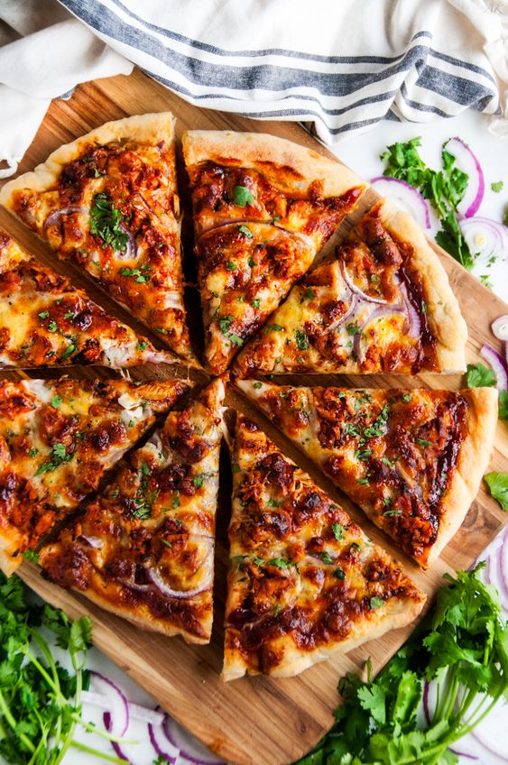
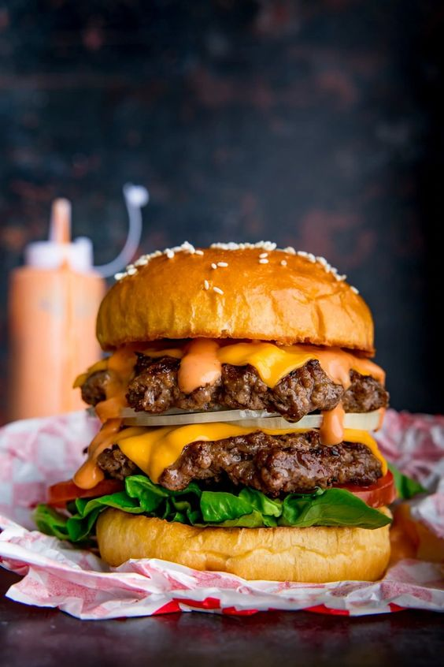

Chocolate Strawberry Cake

Cake Ingredients
- 2 cups (250g) all-purpose flour
- ¾ cup (75g) unsweetened cocoa powder
- 1 ½ tsp baking powder
- 1 tsp baking soda
- 1 tsp salt
- 1 cup (240ml) buttermilk
- 1 cup (240ml) hot water (enhances chocolate flavor)
- 2 large eggs
- ½ cup (120ml) of vegetable oil
- 2 cups (400g) granulated sugar
- 2 teaspoons vanilla extract
Strawberry Filling
- 2 cups (300g) fresh strawberries, hulled and chopped
- ¼ cup (50g) granulated sugar
- 1 tablespoon lemon juice
- 1 tablespoon cornstarch mixed with 1 tablespoon water (for thickening)
Chocolate Ganache (Drizzle/Topping)
- 1 cup (240ml) heavy cream
- 8 oz (225g) semi-sweet chocolate, chopped
Strawberry Buttercream Frosting
- 1 cup (230g) unsalted butter, softened
- 4 cups (500g) powdered sugar
- 1/4 cup (60ml) heavy cream
- 1 teaspoon vanilla extract
- 1/2 cup (75g) fresh strawberries, hulled and chopped
- Pinch of salt
Garnish (Optional)
- Whole strawberries for decoration
- Chocolate shavings or sprinkles
Instructions
Step 1: Bake the cake
- Preheat oven to 350°F (175°C). Grease two 9-inch cake pans.
- Whisk together flour, cocoa powder, sugar, baking powder, baking soda, and salt.
- In another bowl, mix buttermilk, oil, eggs, and vanilla. Combine with dry ingredients.
- Stir in hot water until smooth. Divide batter between pans.
- Bake for 30-35 minutes or until a toothpick inserted in the center comes out clean.
- Cool in pans for 10 minutes, then transfer to a wire rack to cool completely.
Step 2: Make the strawberry filling
- Combine strawberries, sugar, and lemon juice in a saucepan.
- Bring to a boil, then reduce heat and simmer for 10 minutes.
- Stir in cornstarch mixture and cook until thickened. Cool completely.
Step 3: Prepare the frosting
- Beat butter until creamy. Add powdered sugar, cream, vanilla, and salt.
- Mix until smooth and fluffy
Step 4: Make the chocolate Ganache
- Heat cream until simmering. Pour over chocolate and let sit for 5 minutes.
- Stir until smooth and glossy.
Step 5: Assemble the cake
- Place one cake layer on a plate. Spread with strawberry filling.
- Top with second layer. Frost with strawberry buttercream.
- Drizzle with chocolate ganache and garnish with strawberries and chocolate shavings.
Home Made Pizza

Pizza Ingredients
Pizza Dough
- 2 ½ cups (315g) all-purpose flour
- 1 teaspoon salt
- 1 teaspoon sugar
- 1 tablespoon active dry yeast
- ¾ cup (180ml) warm water
- 1 tablespoon olive oil
Pizza Sauce
- 1 cup (240ml) tomato sauce
- 1 teaspoon dried oregano
- 1 teaspoon garlic powder
- ½ teaspoon salt
- ½ teaspoon sugar
Toppings
- 1 cup (125g) shredded mozzarella cheese
- 1 cup (125g) shredded cheddar cheese
- 1 cup (125g) cooked chicken, shredded
- ½ cup (120ml) BBQ sauce
- ½ red onion, thinly sliced
- 1 jalapeño, sliced
- 1 tablespoon fresh cilantro, chopped
Instructions
Step 1: Prepare the dough
- In a bowl, mix flour, salt, sugar, and yeast.
- Add warm water and olive oil, then knead for 5-7 minutes until smooth.
- Cover and let rise for 1 hour until doubled in size.
Step 2: Make the sauce
- Combine tomato sauce, oregano, garlic powder, salt, and sugar.
Step 3: Shape the dough
- Preheat oven to 475°F (245°C).
- Divide dough in half and roll out into two 12-inch circles.
- Place on a baking sheet or pizza stone.
Step 4: Assemble the pizza
- Spread sauce over dough and top with cheeses, chicken, onions, and jalapeños.
- Bake at 450°F (230°C) for 15-20 minutes until crust is golden and cheese is bubbly.
- Drizzle with BBQ sauce and sprinkle with cilantro before serving.
Double Decker Burger

Ingredients
Burger Patties
- 1 lb (450g) ground beef (80/20 lean-to-fat ratio)
- 1 teaspoon salt
- 1 teaspoon pepper
- 1 teaspoon garlic powder
- 1 teaspoon onion powder
- 1 teaspoon Worestershire sauce (optional, for extra flavor)
Burger Sauce
- ½ cup (120ml) mayonnaise
- 2 tablespoons ketchup
- 1 tablespoon mustard
- 1 tablespoon pickle relish
- 1 teaspoon sugar
- 1 teaspoon vinegar
- 1 teaspoon paprika
- 1 teaspoon garlic powder
- 1 teaspoon onion powder
Assembling the burger
- 3 burger buns per burger (1 extra middle bun for the double decker effect)
- 4 slices cheddar cheese (2 per burger)
- Lettuce, tomato, onion, pickles, and any other toppings you like
Instructions
Step 1: Make the burger patties
- Combine ground beef with salt, pepper, garlic powder, onion powder, and Worcestershire sauce.
- Form into 6 patties and refrigerate for 30 minutes.
- Grill or fry patties until cooked to your liking.
Step 2: Prepare the sauce
- Combine mayonnaise, ketchup, mustard, relish, sugar, vinegar, paprika, garlic powder, and onion powder.
Step 3: Assemble the burger
- Toast buns and spread sauce on the bottom bun.
- Top with lettuce, tomato, onion, pickles, and a burger patty.
- Add a slice of cheese and the middle bun.
- Repeat with another patty, cheese, and toppings.
- Top with the final bun and serve.